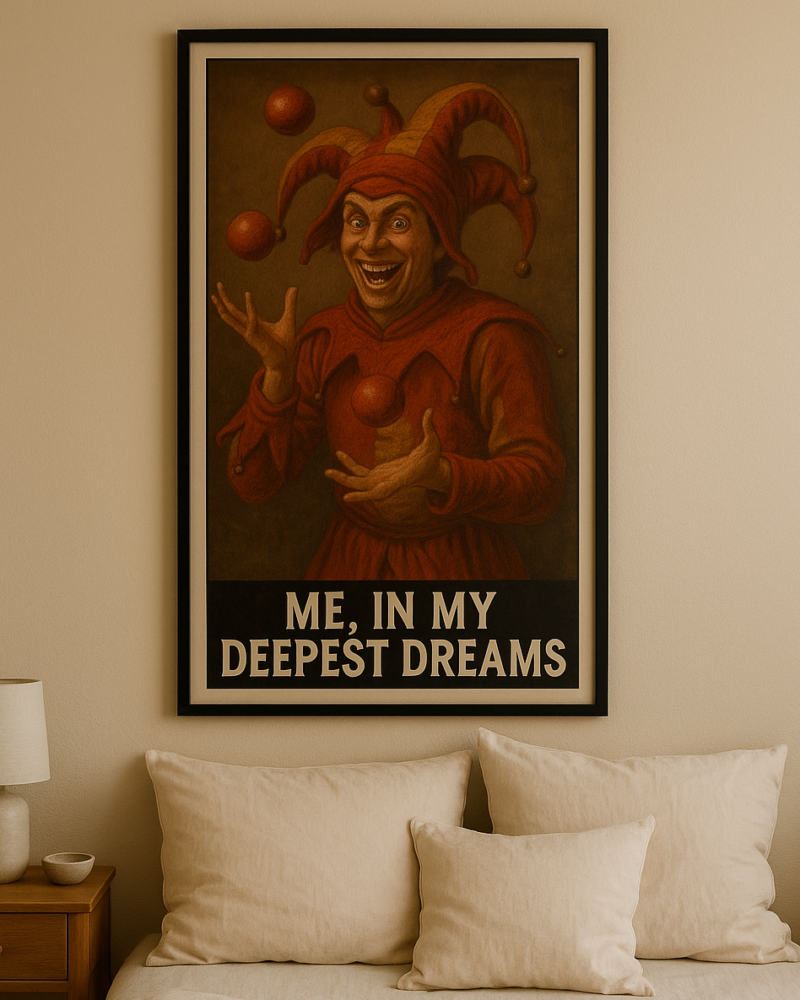

LOS JOURNALOS
Un nouveau métier émerge : ménestrel.
Interview de Robyn Vieux Crouton, ménestrel depuis 3 ans.

J'ai toujours rêvé de faire un métier qui divertit les autres. Ce que j'aime avec l'art du ménestrel, c'est le côté folklo.
Il ajoute même :
"Cette passion ne m'est pas venue du jour au lendemain : je suis fan de Jacquouille depuis ma plus tendre enfance... Cela m'est donc tout simplement venu comme une évidence quand j'ai du remplir mon Parcoursup"

Ce zouave est un fervent monarchiste, on le croise souvent en manifestation pour défendre cette belle cause. Il se défend en disant :
"Etre fou du roi, ce n'est possible que lorsqu'il y a un roi. Je ne peux pas être le fou du président de la République."
Puis il explose de rire (tout seul).
Dans sa chambre, nous découvrons de farouches montages du personnage dans une époque qui n'est pas la sienne...
